File: 000000.gt.txt (if the image is defective, simply delete all Arabic text and the line will be excluded)

و « الغدة «، و « الحبج » .
File: 000001.gt.txt (if the image is defective, simply delete all Arabic text and the line will be excluded)

قالوا: والأصوات كلها إذا كانت على « فعال » أتت بضم الفاء ،
File: 000002.gt.txt (if the image is defective, simply delete all Arabic text and the line will be excluded)
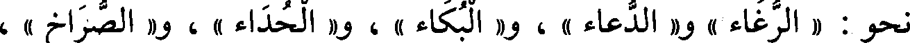
نحو : « الرغاء » و« الدعاء » ، و« البكاء » ، و« الحداء » ، و« الصراخ » ،
File: 000003.gt.txt (if the image is defective, simply delete all Arabic text and the line will be excluded)

و« النباح » ، و « الهتاف » ، قال : و« الصياح » يضم أوله ويكسر ، وكذلك
File: 000004.gt.txt (if the image is defective, simply delete all Arabic text and the line will be excluded)

« النداء » يضم(1) أوله ويكسر . [605]
File: 000005.gt.txt (if the image is defective, simply delete all Arabic text and the line will be excluded)
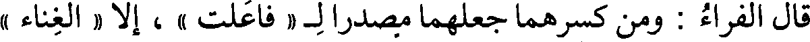
قال الفراء : ومن كسرهما جعلهما مصدرال « فاعلت » ، إلا « الغناء »
File: 000006.gt.txt (if the image is defective, simply delete all Arabic text and the line will be excluded)
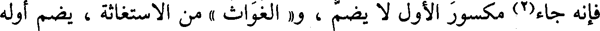
فإنه جاء(2) مكسور الأول لا يضم ، و« الغواث » من الاستغاثة ، يضم أوله
File: 000007.gt.txt (if the image is defective, simply delete all Arabic text and the line will be excluded)
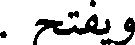
ويفتح .
File: 000008.gt.txt (if the image is defective, simply delete all Arabic text and the line will be excluded)

قال(3) : وأكثر الأصوات يأتي على « فعيل » ، نحو : « الهدير » ،
File: 000009.gt.txt (if the image is defective, simply delete all Arabic text and the line will be excluded)
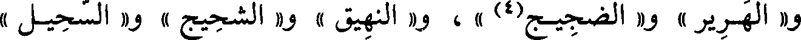
و « الهرير » و« الضجيج(4) » ، و« النهيق » و« الشحيح » و« السحيل »
File: 000010.gt.txt (if the image is defective, simply delete all Arabic text and the line will be excluded)

و« الصهيل » و« القليخ » و« النبيح » و« الضغيب » .
File: 000011.gt.txt (if the image is defective, simply delete all Arabic text and the line will be excluded)
وقد أدخلوا « فعالا » على « فعيل » في أكثر الأصوات، فقالوا
File: 000012.gt.txt (if the image is defective, simply delete all Arabic text and the line will be excluded)

« النهاق والنهيق » و« الشحاج والشحيج » ، و« النباح والنبيح » ،
File: 000013.gt.txt (if the image is defective, simply delete all Arabic text and the line will be excluded)

و« الضغاب والضغيب » ، و« السحال والسحيل » .
File: 000014.gt.txt (if the image is defective, simply delete all Arabic text and the line will be excluded)

قال(5) : و«فعال» يأتي كثيرا فيما يرفض وينبذ ، نحو « رفات »
File: 000015.gt.txt (if the image is defective, simply delete all Arabic text and the line will be excluded)

و« حطام » و« جذاذ » و« فضاض » و« فتات » و« رذال » .
File: 000016.gt.txt (if the image is defective, simply delete all Arabic text and the line will be excluded)
أنا الليث معديا علي وعاديا(1)
File: 000017.gt.txt (if the image is defective, simply delete all Arabic text and the line will be excluded)

بناه على عدي عليه .
File: 000018.gt.txt (if the image is defective, simply delete all Arabic text and the line will be excluded)

واشتد « حمو الشمس وحميها » ، وهو « بلو سفر وبلي سفر » للذي قد
File: 000019.gt.txt (if the image is defective, simply delete all Arabic text and the line will be excluded)

بلاه السفر ، وهو« العبيثران والعبوثران » لضرب من النبت طيب الريح .
File: 000020.gt.txt (if the image is defective, simply delete all Arabic text and the line will be excluded)

قال أبو زيد : تثنية عرق « النسا » نسيان ونسوان ، وتثنية « الرضا »
File: 000021.gt.txt (if the image is defective, simply delete all Arabic text and the line will be excluded)

رضوان ورضيان ، و« الحمى » حموان وحميان، و« الرحا » رحوان
File: 000022.gt.txt (if the image is defective, simply delete all Arabic text and the line will be excluded)

ورحيان، و«نقا » الرمل نقوان ونقيان، وجمع « صائم » : صوم وصيم،
File: 000023.gt.txt (if the image is defective, simply delete all Arabic text and the line will be excluded)

و« نائم » : نوم ونيم ، و« خائف » : خوف وخيف .
File: 000024.gt.txt (if the image is defective, simply delete all Arabic text and the line will be excluded)

قال الفراء: من قاله بالواو فعلى أصله ، ومن قاله بالياء فعلى خائف
File: 000025.gt.txt (if the image is defective, simply delete all Arabic text and the line will be excluded)

ونائم ، بنوا جمعه على واحده .
File: 000026.gt.txt (if the image is defective, simply delete all Arabic text and the line will be excluded)

وجمع « ميثرة » : مياثر و« مواثر » ، و« الميثاق » : مواثق ومياثق ،
File: 000027.gt.txt (if the image is defective, simply delete all Arabic text and the line will be excluded)

و« لأقاوم » والأقايم : القوم ، وجمع « حائر » : حوران وحيران .
File: 000028.gt.txt (if the image is defective, simply delete all Arabic text and the line will be excluded)

باب ما يقال بالهمز والياء
File: 000029.gt.txt (if the image is defective, simply delete all Arabic text and the line will be excluded)

و« اليرقان والأرقان » [593] ، يقال : زرع « مأروق » وميروق ، ورمح
File: 000030.gt.txt (if the image is defective, simply delete all Arabic text and the line will be excluded)

فإنما هو فعيل بمعنى مفعول .
File: 000031.gt.txt (if the image is defective, simply delete all Arabic text and the line will be excluded)

وقالوا : شديد ، ولم يأت له ضد ، استغنى بضد مثله عن ضده ، مثل
File: 000032.gt.txt (if the image is defective, simply delete all Arabic text and the line will be excluded)
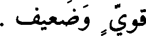
قوي وضعيف .
File: 000033.gt.txt (if the image is defective, simply delete all Arabic text and the line will be excluded)

وقد جاءت أشياء على غير هذا البناء ، قالوا [609] « حسن » ولم
File: 000034.gt.txt (if the image is defective, simply delete all Arabic text and the line will be excluded)

يقولوا حسين ، كما قالوا جميل ، وقالوا «جريء» و « شجيع » ولم يقولوا
File: 000035.gt.txt (if the image is defective, simply delete all Arabic text and the line will be excluded)

جبين من الجبان ، وقالوا « عظيم » ولم يقولوا « ضخيم » ، وقالوا « كميش »
File: 000036.gt.txt (if the image is defective, simply delete all Arabic text and the line will be excluded)

فاستغنوا بضد مثله عن ضده ، مثل سريع وبطيء ، وقالوا : « لبيب » ولا ضد
File: 000037.gt.txt (if the image is defective, simply delete all Arabic text and the line will be excluded)

له ، استغنى بضد مثله عن ضده ، وهو عاقل وجاهل .
File: 000038.gt.txt (if the image is defective, simply delete all Arabic text and the line will be excluded)

وقالوا : « شحيح » و « ضنين » و « بخيل » ولم يأت في ضد ذلك إلا
File: 000039.gt.txt (if the image is defective, simply delete all Arabic text and the line will be excluded)

« سخي » على هذا البناء.
File: 000040.gt.txt (if the image is defective, simply delete all Arabic text and the line will be excluded)

قال : وليس اسم من هذه الأفعال التي لحقتها الزوائد يكون أبدا إلا
File: 000041.gt.txt (if the image is defective, simply delete all Arabic text and the line will be excluded)

صفة ، إلا ما كان من « مفعل » فإنه جاء اسما في « مخدع » ونحوه(2) .
File: 000042.gt.txt (if the image is defective, simply delete all Arabic text and the line will be excluded)
باب شواذ البناء
File: 000043.gt.txt (if the image is defective, simply delete all Arabic text and the line will be excluded)

قال سيبويه(3) : ليس في الأسماء ولا في الصفات « فعل » ولا تكون
File: 000044.gt.txt (if the image is defective, simply delete all Arabic text and the line will be excluded)
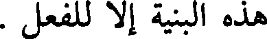
هذه البنية إلا للفعل .
File: 000045.gt.txt (if the image is defective, simply delete all Arabic text and the line will be excluded)
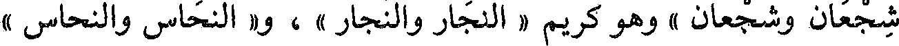
شجعان وشجعان » وهو كريم « النجار والنجار » ، و« النحاس والنحاس »
File: 000046.gt.txt (if the image is defective, simply delete all Arabic text and the line will be excluded)

أي : الأصل ، و« الصياح والصياح» و«صوان الثوب وصوانه » : التخت(1)
File: 000047.gt.txt (if the image is defective, simply delete all Arabic text and the line will be excluded)

أو الوعاء(2) الذي يصان فيه ، و« هم رهاق مائة ورهاق مائة » كقولك : هم(3)
File: 000048.gt.txt (if the image is defective, simply delete all Arabic text and the line will be excluded)

زهاء مائة، وصار البيض « فلاقا وفلاقا » أي : فلقا ،و« إبل طلاحية
File: 000049.gt.txt (if the image is defective, simply delete all Arabic text and the line will be excluded)

وطلاحية » تأكل الطلح ، و« رجل نباطي ونباطي » منسوب ، وأصابه
File: 000050.gt.txt (if the image is defective, simply delete all Arabic text and the line will be excluded)

« إطام وأطام » إذا احتبس بطنه .
File: 000051.gt.txt (if the image is defective, simply delete all Arabic text and the line will be excluded)

باب فعال وفعال
File: 000052.gt.txt (if the image is defective, simply delete all Arabic text and the line will be excluded)

« بالثوب(4)عوار وعوار » و« فواق الناقة وفواقها » : ما بين الحلبتين ،
File: 000053.gt.txt (if the image is defective, simply delete all Arabic text and the line will be excluded)

والصقر « قطامي وقطامي »، أجاب الله « غواثه وغواثه(5) » من الاستغاثة .
File: 000054.gt.txt (if the image is defective, simply delete all Arabic text and the line will be excluded)

ولم يأت في الأصوات إلا مضموما مثل « الحداء » و« الدعاء » ،
File: 000055.gt.txt (if the image is defective, simply delete all Arabic text and the line will be excluded)

و« البكاء » ،غير« غواث » فإنه يفتح ويضم ، وجاء في الأصوات مكسورا
File: 000056.gt.txt (if the image is defective, simply delete all Arabic text and the line will be excluded)

نحو(6)[571] « النداء » و« الصياح » وقد ضما أيضا .
File: 000057.gt.txt (if the image is defective, simply delete all Arabic text and the line will be excluded)

قال الكسائي : دخلت في « غمار الناس ، وغمارهم »، أي : في
File: 000058.gt.txt (if the image is defective, simply delete all Arabic text and the line will be excluded)

جماعتهم(8) وكذلك « خمار الناس وخمارهم » .
File: 000059.gt.txt (if the image is defective, simply delete all Arabic text and the line will be excluded)

قال(1) : والصناعة إنما هي بمنزلة الولاية للشيء والقيام به ؛ فلذلك
File: 000060.gt.txt (if the image is defective, simply delete all Arabic text and the line will be excluded)

جمع بينهما في البناء .
File: 000061.gt.txt (if the image is defective, simply delete all Arabic text and the line will be excluded)

قال(2) : وقد جاء « فعال » في أشياء تقاربت معانيها(3) ؛ فجيء بها
File: 000062.gt.txt (if the image is defective, simply delete all Arabic text and the line will be excluded)

[607] على مثال واحد ، وهو « الفرار » و « الشراد » و « النفار »
File: 000063.gt.txt (if the image is defective, simply delete all Arabic text and the line will be excluded)

و « الشماس » و« الطماح » ، و « الضراح »(4) مشبه بذلك ، والضرح(5) :
File: 000064.gt.txt (if the image is defective, simply delete all Arabic text and the line will be excluded)

الرمح ، ضرح أي رمح ؛ لأنه إذا ضرح باعدك ، و « الشباب » مشبه
File: 000065.gt.txt (if the image is defective, simply delete all Arabic text and the line will be excluded)

(6 بالشماس ، و« الخراط مشبه بالشراد ، و«العضاض» مشبه6) بالضراح .
File: 000066.gt.txt (if the image is defective, simply delete all Arabic text and the line will be excluded)

وقالوا : « الحران » في الخيل ، و« الخلاء » في النوق ، فجاءوابهما
File: 000067.gt.txt (if the image is defective, simply delete all Arabic text and the line will be excluded)

على هذا المثال؛ لأنهما فرق وتباعد من شيء يهاب، ولأنهما في العيوب
File: 000068.gt.txt (if the image is defective, simply delete all Arabic text and the line will be excluded)

بمنزلة ما تقدم .
File: 000069.gt.txt (if the image is defective, simply delete all Arabic text and the line will be excluded)

قال : وقد يأتي «فعال» في الوسوم، نحو «العلاط »
File: 000070.gt.txt (if the image is defective, simply delete all Arabic text and the line will be excluded)

و«الخباط(7)» و « العراض » و « الجناب » و « الكشاح » ، وهذه أسماء
File: 000071.gt.txt (if the image is defective, simply delete all Arabic text and the line will be excluded)

آثار(8) الوسوم .
File: 000072.gt.txt (if the image is defective, simply delete all Arabic text and the line will be excluded)

والمصدر منها(9) يأتي على « فعل » ، نحو(10): خبطته « خبطا »
File: 000073.gt.txt (if the image is defective, simply delete all Arabic text and the line will be excluded)

ويوم « الأربعاء » - بكسر الباء وفتح الهمزة (1) - وحكى الأصمعي
File: 000074.gt.txt (if the image is defective, simply delete all Arabic text and the line will be excluded)

« الأربعاء » بفتح الباء ، وحكاها ابن الأعرابي أيضا(2) .
File: 000075.gt.txt (if the image is defective, simply delete all Arabic text and the line will be excluded)

و« شأو مغرب ومغرب(3) » أي : بعيد ، و« الذفاري والذفارى » جمع
File: 000076.gt.txt (if the image is defective, simply delete all Arabic text and the line will be excluded)

ذفرى ، و« عذارى وعذاري » ، و« صحارى وصحاري » ، وهي « الطنفسة
File: 000077.gt.txt (if the image is defective, simply delete all Arabic text and the line will be excluded)

والطنفسة »، و« زبيل » مفوحة(4) الزاي ، فإن كسرتها زدت نونا فقلت زنبيل ،
File: 000078.gt.txt (if the image is defective, simply delete all Arabic text and the line will be excluded)

ولا يقال : زنبيل .
File: 000079.gt.txt (if the image is defective, simply delete all Arabic text and the line will be excluded)

«والمرعزى » إن شددت الزاي قصرت ، وإن خففتها مددت ،
File: 000080.gt.txt (if the image is defective, simply delete all Arabic text and the line will be excluded)

وكذلك « القبيطاء[589] والقبيطي(5) » الناطف ، و« الباقلى » أيضا .
File: 000081.gt.txt (if the image is defective, simply delete all Arabic text and the line will be excluded)

و« الحلي » إن شددت ضممت أوله ، وإن خففت فتحت أوله
File: 000082.gt.txt (if the image is defective, simply delete all Arabic text and the line will be excluded)

فقلت(6): « الحلى » . قال الفراء : الحلي جمع حلي ، مثل : وحى
File: 000083.gt.txt (if the image is defective, simply delete all Arabic text and the line will be excluded)

ووحي .
File: 000084.gt.txt (if the image is defective, simply delete all Arabic text and the line will be excluded)

و« قوباء » بفتح الواو مؤنثة لا تنصرف ، وجمعها قوب ، وإن سكنت
File: 000085.gt.txt (if the image is defective, simply delete all Arabic text and the line will be excluded)

الواو ذكرت وصرفت ، وهي « القلنسوة والقلنسية » إذا فتحت القاف ضممت
File: 000086.gt.txt (if the image is defective, simply delete all Arabic text and the line will be excluded)

السين وإذا ضممت القاف كسرت السين ؛ وهي « الإرزبة » : التي (7) يضرب
File: 000087.gt.txt (if the image is defective, simply delete all Arabic text and the line will be excluded)

بها - بالتشديد - فإن(8) قلتها بالميم خففت (9) فقلت(10) : مرزبة ، وأنشد
File: 000088.gt.txt (if the image is defective, simply delete all Arabic text and the line will be excluded)

قالوا « صفو الشيء » ففتحوا لا غير .
File: 000089.gt.txt (if the image is defective, simply delete all Arabic text and the line will be excluded)

قال الأصمعي : أخذت« صفوة الشيء وصفوه » كما يقال للصدر برك
File: 000090.gt.txt (if the image is defective, simply delete all Arabic text and the line will be excluded)

وبركة .
File: 000091.gt.txt (if the image is defective, simply delete all Arabic text and the line will be excluded)

أوطأته« العشوة والعشوة والعشوة » ، وهي « الربوة والربوة والربوة »
File: 000092.gt.txt (if the image is defective, simply delete all Arabic text and the line will be excluded)

للمكان المرتفع ، وهي « وجنة ووجنة ووجنة » ، و« جذوة من النار وجذوة
File: 000093.gt.txt (if the image is defective, simply delete all Arabic text and the line will be excluded)

وجذوة » ، و« جثوة وجثوة وجثوة » ، وهي« الغشوة والغشوة والغشوة » ، وفيه
File: 000094.gt.txt (if the image is defective, simply delete all Arabic text and the line will be excluded)

« غلظة وغلظة وغلظة » ، والحرب« خدعة وخدعة » زاد يونس
File: 000095.gt.txt (if the image is defective, simply delete all Arabic text and the line will be excluded)

فعال بثلاث لغات
File: 000096.gt.txt (if the image is defective, simply delete all Arabic text and the line will be excluded)

« وخدعة » .
File: 000097.gt.txt (if the image is defective, simply delete all Arabic text and the line will be excluded)

هو « الزجاج والزجاج والزجاج » ، وهو مقطوع « النخاع والنخاع
File: 000098.gt.txt (if the image is defective, simply delete all Arabic text and the line will be excluded)

والنخاع » وهو الأبيض الذي في جوف الفقار ، وهو « قصاص الشعر
File: 000099.gt.txt (if the image is defective, simply delete all Arabic text and the line will be excluded)

وقصاص وقصاص » ، وهو « الوشاح والإشاح والوشاح » ، وفي طعامه
File: 000100.gt.txt (if the image is defective, simply delete all Arabic text and the line will be excluded)

« زوان وزؤان »(1) و « زوان » ، وهو « جمام المكوك وجمام وجمام »
File: 000101.gt.txt (if the image is defective, simply delete all Arabic text and the line will be excluded)

و «» صوان وصوان وصوان «»، عن أبي زيد: «» نحن منكم براء
File: 000102.gt.txt (if the image is defective, simply delete all Arabic text and the line will be excluded)

وبراء وبراء » .
File: 000103.gt.txt (if the image is defective, simply delete all Arabic text and the line will be excluded)

وقال الفراء : ليس في الكلام « فعلال - بفتح الفاء - من غير ذوات
File: 000104.gt.txt (if the image is defective, simply delete all Arabic text and the line will be excluded)

التضعيف إلا حرف واحد ، يقال : ناقة بها « خزعال » أي(1) : ظلع .
File: 000105.gt.txt (if the image is defective, simply delete all Arabic text and the line will be excluded)

قال : فأما ذوات التضعيف ف « القلقال » و « الزلزال » وما أشبه
File: 000106.gt.txt (if the image is defective, simply delete all Arabic text and the line will be excluded)

ذلك ، وهو مفتوح(2) اسم ؛ فإذا كسرته فهو مصدر ، وتقول : « قلقلته
File: 000107.gt.txt (if the image is defective, simply delete all Arabic text and the line will be excluded)

قلقالا » و « زلزلته [615] زلزالا » .
File: 000108.gt.txt (if the image is defective, simply delete all Arabic text and the line will be excluded)

قال سيبويه(3) : و « فعلال » من غير المضاعف (4) « حملاق »
File: 000109.gt.txt (if the image is defective, simply delete all Arabic text and the line will be excluded)

و « قنطار » و « شملال » ، والصفة « سرداح » و « هلباج » .
File: 000110.gt.txt (if the image is defective, simply delete all Arabic text and the line will be excluded)

وقال سيبويه(5) : وقد جاء « فعلاء » بفتح العين ، في الأسماء دون
File: 000111.gt.txt (if the image is defective, simply delete all Arabic text and the line will be excluded)

الصفات ، قالوا : « قرماء » و « جنفاء » وهما مكانان ، وأنشد(6) :
File: 000112.gt.txt (if the image is defective, simply delete all Arabic text and the line will be excluded)

على قرماء عالية(7) شواه كأن بياض غرته خمار
File: 000113.gt.txt (if the image is defective, simply delete all Arabic text and the line will be excluded)

وأنشد أيضا(8) :
File: 000114.gt.txt (if the image is defective, simply delete all Arabic text and the line will be excluded)

رحلت إليك من جنفاء حتى أنخت فناء بيتك بالمطالي
File: 000115.gt.txt (if the image is defective, simply delete all Arabic text and the line will be excluded)

و « أفكل » وأشباهذلك ؛ إلا « أولقا » فإن الهمزة من نفس الحرف ، ألا ترى
File: 000116.gt.txt (if the image is defective, simply delete all Arabic text and the line will be excluded)

أنك تقول « ألق الرجل » ، قال : وهو فوعل ، و « أرطى » لأنك تقول « أديم
File: 000117.gt.txt (if the image is defective, simply delete all Arabic text and the line will be excluded)

مأروط » ولو كانت الهمزة زائدة لقلت مرطي .
File: 000118.gt.txt (if the image is defective, simply delete all Arabic text and the line will be excluded)

قال سيبويه(1) : و « إمر » و « إمع » الهمزة من نفس الحرف ؛ لأن
File: 000119.gt.txt (if the image is defective, simply delete all Arabic text and the line will be excluded)

إفعلا (2) لا يكون وصفا ، وإنما (3)هو فعل ، و« إلق » من التألق ، كذلك
File: 000120.gt.txt (if the image is defective, simply delete all Arabic text and the line will be excluded)

هو مثل « هيخ » (
File: 000121.gt.txt (if the image is defective, simply delete all Arabic text and the line will be excluded)

قال (5) : ومما همزوه وهو من نفس الحرف « أول » و« أوائل »
File: 000122.gt.txt (if the image is defective, simply delete all Arabic text and the line will be excluded)

استثقلوا ألفا بين واوين .
File: 000123.gt.txt (if the image is defective, simply delete all Arabic text and the line will be excluded)

قال الفراء : ومما همزوه ولا حظ له في الهمز « غرقيء البيض (6) »
File: 000124.gt.txt (if the image is defective, simply delete all Arabic text and the line will be excluded)

وأصله من الغرق ، و « الشمأل «» و « الشأمل » [633] وأصله من الشمال .
File: 000125.gt.txt (if the image is defective, simply delete all Arabic text and the line will be excluded)

قال الفراء : وقالوا « قمت قياما » و« صمت صياما » فقلبوا في المصدر
File: 000126.gt.txt (if the image is defective, simply delete all Arabic text and the line will be excluded)

الواو ياء ؛ وقالوا « قاومته قواما » و « حاورته حوارا » فلم يقلبوا في المصدر
File: 000127.gt.txt (if the image is defective, simply delete all Arabic text and the line will be excluded)

الواو ياء ؛ لأن الواو صحت في فعل هذا(7) المصدر الثاني فصحت فيه ،
File: 000128.gt.txt (if the image is defective, simply delete all Arabic text and the line will be excluded)

واعتلت في فعل المصدر الأول فاعتلت(8) فيه .
File: 000129.gt.txt (if the image is defective, simply delete all Arabic text and the line will be excluded)

وقال الفراء، في قول العرب « صار صيرورة » و « حاد حيدودة »
File: 000130.gt.txt (if the image is defective, simply delete all Arabic text and the line will be excluded)

و« سار سيرورة » : وهو خاص لذوات الياء من بين الكلام ، إلا في أربعة
File: 000131.gt.txt (if the image is defective, simply delete all Arabic text and the line will be excluded)

لأنه عهد إليه فنسي ؛ فهذا دليل على أنه إنسيان في الأصل .
File: 000132.gt.txt (if the image is defective, simply delete all Arabic text and the line will be excluded)

قال(1) الفراء : « التوراة » من « وري الزند » كأنها الضياء .
File: 000133.gt.txt (if the image is defective, simply delete all Arabic text and the line will be excluded)

قالوا : و« آري » الدابة[637] فاعول من التأري ، وهو التحبس .
File: 000134.gt.txt (if the image is defective, simply delete all Arabic text and the line will be excluded)

قالوا : و« أدحي النعامة » أفعول من دحا يدحو ؛ لأنها تدحوه
File: 000135.gt.txt (if the image is defective, simply delete all Arabic text and the line will be excluded)

بصدرها ، وهو مثل(2) أفحوص .
File: 000136.gt.txt (if the image is defective, simply delete all Arabic text and the line will be excluded)

قال الفراء : « ماء معين » مفعول من العيون ، فنقص كما قيل مخيط
File: 000137.gt.txt (if the image is defective, simply delete all Arabic text and the line will be excluded)

ومكيل ، و« السرية » فعلية من السر ، وهو النكاح ، إلا أنهم ضموا أولها كما
File: 000138.gt.txt (if the image is defective, simply delete all Arabic text and the line will be excluded)

يغيرون في النسب .
File: 000139.gt.txt (if the image is defective, simply delete all Arabic text and the line will be excluded)

قال(3) الأصمعي:وقولهم(4) «تسريت» أصله(5) تسررت من السر -
File: 000141.gt.txt (if the image is defective, simply delete all Arabic text and the line will be excluded)

نكاحا ، فأبدل من الراء ياء ، كما قالوا « تظنيت » من الظن ، وأصلها
File: 000142.gt.txt (if the image is defective, simply delete all Arabic text and the line will be excluded)

تظننت .
File: 000143.gt.txt (if the image is defective, simply delete all Arabic text and the line will be excluded)

وقالوا : « لبى فلان » من التلبية ، وكان أصلها(7) لببت ؛ لأنها من
File: 000144.gt.txt (if the image is defective, simply delete all Arabic text and the line will be excluded)

ألببت بالمكان ، قال ذلك الخليل(8) ، وقال : ومعنى « لبيك » هاأناذاعبدك قد
File: 000145.gt.txt (if the image is defective, simply delete all Arabic text and the line will be excluded)

و« ثكلان » و« غضبان » و « غيران » و« خزيان ».
File: 000146.gt.txt (if the image is defective, simply delete all Arabic text and the line will be excluded)

وقال : ومما ضاد هذا المعنى فبنوه بناءه « شبعان » و« ريان »
File: 000147.gt.txt (if the image is defective, simply delete all Arabic text and the line will be excluded)

و« ملآن » و« سكران » . قال سيبويه(1) : و« حيران » في معنى سكران ؛
File: 000148.gt.txt (if the image is defective, simply delete all Arabic text and the line will be excluded)

لأن كليهما مرتج عليه .
File: 000149.gt.txt (if the image is defective, simply delete all Arabic text and the line will be excluded)

قال : و« فعل » يأتي في الأدواء وما قارب معناها ، يقال : رجل
File: 000150.gt.txt (if the image is defective, simply delete all Arabic text and the line will be excluded)

« وجع » و« دو »[601]و« حبط » و« حبج » و« لو » و« وج » ، وعمي قلبه
File: 000151.gt.txt (if the image is defective, simply delete all Arabic text and the line will be excluded)

فهو « عم » جعل العمى في القلب بمنزلة الأدواء .
File: 000152.gt.txt (if the image is defective, simply delete all Arabic text and the line will be excluded)

وكذلك « وجل » وأشباهه - من(2) الذعر والخوف - شبه به لأنه داء
File: 000153.gt.txt (if the image is defective, simply delete all Arabic text and the line will be excluded)

أصاب قلبه ، نحو « فرق » و« وجل » و« فزع » ، وقالوا : « جرب » ،
File: 000154.gt.txt (if the image is defective, simply delete all Arabic text and the line will be excluded)

و « شعث » ، و« حمق » ، و« قعس » ، و« كدر » ، و« خشن » .
File: 000155.gt.txt (if the image is defective, simply delete all Arabic text and the line will be excluded)

وقالوا : « سهك » و« لخن » و« لكد » و« لكن » و« قنم » ،
File: 000156.gt.txt (if the image is defective, simply delete all Arabic text and the line will be excluded)

و« حسك » كل هذا للشيء يتغير من الوسخ ويسود ، جعلوه(3) كالداء ؛ لأنه
File: 000157.gt.txt (if the image is defective, simply delete all Arabic text and the line will be excluded)

وشبيه(4) بذلك ما تعقد ولم يسهل ، نحو : « عسر » و« شكس »
File: 000158.gt.txt (if the image is defective, simply delete all Arabic text and the line will be excluded)

عيب .
File: 000159.gt.txt (if the image is defective, simply delete all Arabic text and the line will be excluded)

و« لقس »(5) و« لحز » و« نكد » و« لحج » ؛ لأن هذه أشياء مكروهة ؛
File: 000160.gt.txt (if the image is defective, simply delete all Arabic text and the line will be excluded)

فجعلت كالأدواء .
File: 000161.gt.txt (if the image is defective, simply delete all Arabic text and the line will be excluded)

وقد يدخل(6) « فعيل » على « فعل » في بعض هذا الباب ، قالوا :
File: 000162.gt.txt (if the image is defective, simply delete all Arabic text and the line will be excluded)

الكسائي(1) : يقال « غلام يفعة ، وغلمان يفعة » الجميع(2) مثل
File: 000163.gt.txt (if the image is defective, simply delete all Arabic text and the line will be excluded)

الواحد .
File: 000164.gt.txt (if the image is defective, simply delete all Arabic text and the line will be excluded)

قال [641] سيبويه(3) : يقال « جمل عبر أسفار » و« جمال عبر
File: 000165.gt.txt (if the image is defective, simply delete all Arabic text and the line will be excluded)

أسفار » و« درع دلاص » و« أدرع دلاص » وربما قيل « دلص » و« امرأة
File: 000167.gt.txt (if the image is defective, simply delete all Arabic text and the line will be excluded)

وقال سيبويه(5) : « الحلفاء » واحد وجمع(6) ، وكذلك « الطرفاء » ،
File: 000168.gt.txt (if the image is defective, simply delete all Arabic text and the line will be excluded)

و « البهمى » واحدة(7) وجميع ، و« الشكاعى » واحدة وجميع .
File: 000169.gt.txt (if the image is defective, simply delete all Arabic text and the line will be excluded)

وقال غيره : « الطرفاء » جمع « طرفة » و« الحلفاء » جمع « حلفة »
File: 000170.gt.txt (if the image is defective, simply delete all Arabic text and the line will be excluded)

و « الشجراء » جمع « شجرة » و« القصباء » جمع قصبة » .
File: 000171.gt.txt (if the image is defective, simply delete all Arabic text and the line will be excluded)

قال الفراء مثل ذلك ، إلا في « الحلفاء » فإنه قال : لم أسمع
File: 000172.gt.txt (if the image is defective, simply delete all Arabic text and the line will be excluded)

الواحدة(8) منها إلا « حلفاءة » وتصغر « حليفية »(9) .
File: 000173.gt.txt (if the image is defective, simply delete all Arabic text and the line will be excluded)

قال غيره : يقال « بعير قرحان» إذا لم يصبه الجرب ، و « صبي
File: 000174.gt.txt (if the image is defective, simply delete all Arabic text and the line will be excluded)

قرحان » إذا لم يصبه الجدري ،الواحد والاثنان(10)والمذكر والمؤنث فيه
File: 000175.gt.txt (if the image is defective, simply delete all Arabic text and the line will be excluded)

الميم بمنزلة الهمزة ، فقالوا مفعول كما قالوا أفعول ، وكما قالوا مفعال لما
File: 000176.gt.txt (if the image is defective, simply delete all Arabic text and the line will be excluded)

قالوا إفعال ، [613] ومفعيل لما قالوا إفعيل ، وقالوا : « معلوق »
File: 000177.gt.txt (if the image is defective, simply delete all Arabic text and the line will be excluded)

للمعلاق . وزاد غيره : و« مغرود » لضرب من الكمأة ، و« مغفور » لواحد
File: 000178.gt.txt (if the image is defective, simply delete all Arabic text and the line will be excluded)

المغافير ، ويقال : « مغثور » أيضا ، و « منخور » للمنخر ، وقالوا(1) : شبه
File: 000179.gt.txt (if the image is defective, simply delete all Arabic text and the line will be excluded)

بفعلول .
File: 000180.gt.txt (if the image is defective, simply delete all Arabic text and the line will be excluded)

وقال أيضا(2) غيره : وليس يأتي « مفعول » من ذوات الثلاثة - وهي من
File: 000181.gt.txt (if the image is defective, simply delete all Arabic text and the line will be excluded)

بنات الواو - بالتمام ، وإنما يأتي بالنقص ، مثل « مقول » و« مخوف » إلا
File: 000182.gt.txt (if the image is defective, simply delete all Arabic text and the line will be excluded)

حرفان ، قالوا : مسك « مدووف » وثوب « مصوون » .
File: 000183.gt.txt (if the image is defective, simply delete all Arabic text and the line will be excluded)

فأما(4) ذوات الياء فتأتي بالنقص والتمام ، يقال(5) : بر « مكيل »
File: 000184.gt.txt (if the image is defective, simply delete all Arabic text and the line will be excluded)

و « مكيول » وثوب « مخيط » و « مخيوط » ورجل « معين » و « معيون » .
File: 000185.gt.txt (if the image is defective, simply delete all Arabic text and the line will be excluded)

وقال سيبويه : ولم يأت على « فعول » اسم ولا صفة(6) .
File: 000186.gt.txt (if the image is defective, simply delete all Arabic text and the line will be excluded)

وقال غيره : قد جاء « سبوح » و « قدوس » و« ذروح »(7) لواحد
File: 000187.gt.txt (if the image is defective, simply delete all Arabic text and the line will be excluded)

الذراريح . وحكى سيبويه : « قدوس » و « سبوح »(8) بالفتح ، وكان يقول
File: 000188.gt.txt (if the image is defective, simply delete all Arabic text and the line will be excluded)

باب شواذ التصريف
File: 000189.gt.txt (if the image is defective, simply delete all Arabic text and the line will be excluded)

قال الفراء وغيره : العرب إذا ضمت حرفاإلى حرف فربماأجروه على
File: 000190.gt.txt (if the image is defective, simply delete all Arabic text and the line will be excluded)

بنيته ، ولو أفرد(1) لتركوه على جهته الأولى ؛ من ذلك قولهم : « إني لآتيه
File: 000191.gt.txt (if the image is defective, simply delete all Arabic text and the line will be excluded)

بالعشايا والغدايا » فجمعوا(2) الغداة غدايا لما ضمت إلى العشايا .
File: 000192.gt.txt (if the image is defective, simply delete all Arabic text and the line will be excluded)

وأنشد(4) :
File: 000193.gt.txt (if the image is defective, simply delete all Arabic text and the line will be excluded)

هتاك أخبية ولاج أبوبة يخلط بالجد منه البر واللينا
File: 000194.gt.txt (if the image is defective, simply delete all Arabic text and the line will be excluded)

فجمع الباب« أبوبة » إذ كان متبعا لأخبية ، ولو أفرد(5) لم يجز[623]
File: 000195.gt.txt (if the image is defective, simply delete all Arabic text and the line will be excluded)

وقال آخر(6) :
File: 000196.gt.txt (if the image is defective, simply delete all Arabic text and the line will be excluded)

أزمان عيناء سرور المسرور عيناء حوراء من العين الحير
File: 000197.gt.txt (if the image is defective, simply delete all Arabic text and the line will be excluded)

فقال « الحير » إذ كان بعد « العين » .
File: 000198.gt.txt (if the image is defective, simply delete all Arabic text and the line will be excluded)

قال الفراء : وأرى قولهم في الحديث(7) : « ارجعن مأزورات غير
File: 000199.gt.txt (if the image is defective, simply delete all Arabic text and the line will be excluded)

أحرف من ذوات الواو ، وهي « كينونة » و « ديمومة » و« هيعوعة »
File: 000200.gt.txt (if the image is defective, simply delete all Arabic text and the line will be excluded)

و« سيدودة » ، وإنما جعلت بالياء وهي من الواو ؛ لأنها جاءت على بناء
File: 000201.gt.txt (if the image is defective, simply delete all Arabic text and the line will be excluded)

لذوات الياء ليس(1) للواو فيه حظ فقيلت بالياء ، كما قالوا « الشكاية » وهي
File: 000202.gt.txt (if the image is defective, simply delete all Arabic text and the line will be excluded)

من ذوات الواو ، لما جاءت على(2) مصادر الياء نحو « السعاية »
File: 000203.gt.txt (if the image is defective, simply delete all Arabic text and the line will be excluded)

و« الرماية » .
File: 000204.gt.txt (if the image is defective, simply delete all Arabic text and the line will be excluded)
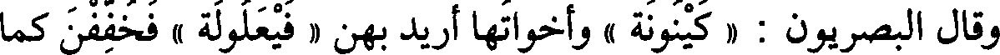
وقال البصريون : « كينونة » وأخواتها أريد بهن « فيعلولة » فخففن كما
File: 000205.gt.txt (if the image is defective, simply delete all Arabic text and the line will be excluded)

خفف الميت .
File: 000206.gt.txt (if the image is defective, simply delete all Arabic text and the line will be excluded)

قال الفراء : أريد بهن « فعلولة » ففتحوا أولها كراهية أن تصير الياء
File: 000207.gt.txt (if the image is defective, simply delete all Arabic text and the line will be excluded)

واوا ، وأما « فيعلولة » فإنها[634] صورة لم تأت لسقيم(3) ولا صحيح ،
File: 000208.gt.txt (if the image is defective, simply delete all Arabic text and the line will be excluded)

ولو كانت للمعتل على مذهبهم لوجدتها تامة في شعر أو سجع كما وجدت
File: 000209.gt.txt (if the image is defective, simply delete all Arabic text and the line will be excluded)

الميت والميت .
File: 000210.gt.txt (if the image is defective, simply delete all Arabic text and the line will be excluded)

وقال غير واحد : كل « أفعل » فالاسم منه « مفعل » بكسر العين ،
File: 000211.gt.txt (if the image is defective, simply delete all Arabic text and the line will be excluded)

نحو : « أقبل فهو مقبل » و« أدبر فهو مدبر » وجاء حرف واحد نادر لا يعرف
File: 000212.gt.txt (if the image is defective, simply delete all Arabic text and the line will be excluded)

غيره ، قالوا « أسهب في كلامه فهو مسهب » بفتح الهاء ، ولا يقال « مسهب »
File: 000213.gt.txt (if the image is defective, simply delete all Arabic text and the line will be excluded)

بكسر الهاء .
File: 000215.gt.txt (if the image is defective, simply delete all Arabic text and the line will be excluded)
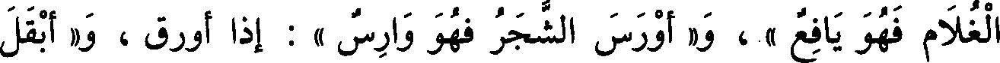
الغلام فهو يافع » ، و« أورس الشجر فهو وارس » : إذا أورق ، و« أبقل
File: 000216.gt.txt (if the image is defective, simply delete all Arabic text and the line will be excluded)

الموضع فهو باقل » .
File: 000217.gt.txt (if the image is defective, simply delete all Arabic text and the line will be excluded)

وقد جاء منها شيء على غير ذلك ، قالوا : « جون » و« ورد »
File: 000218.gt.txt (if the image is defective, simply delete all Arabic text and the line will be excluded)

و« خصيف » .
File: 000219.gt.txt (if the image is defective, simply delete all Arabic text and the line will be excluded)

والأفعال تأتي على « فعل » ، نحو: « صهب » و« أدم » و« كهب » ،
File: 000220.gt.txt (if the image is defective, simply delete all Arabic text and the line will be excluded)

وعلى « فعل » ، نحو : « صديء » ، وعلى « افعال » ، نحو: « احمار »
File: 000221.gt.txt (if the image is defective, simply delete all Arabic text and the line will be excluded)

و« اصفار » ، وعلى «افعل أيضا(1) ، نحو : « احمر » و« اصفر »
File: 000222.gt.txt (if the image is defective, simply delete all Arabic text and the line will be excluded)

باب الصفات(2) بالعيوب والأدواء
File: 000223.gt.txt (if the image is defective, simply delete all Arabic text and the line will be excluded)

و« اخضر » .
File: 000224.gt.txt (if the image is defective, simply delete all Arabic text and the line will be excluded)

قد تأتي على « أفعل » ، نحو « أزرق » و«أحمر » و« أعور » و« أشتر »
File: 000225.gt.txt (if the image is defective, simply delete all Arabic text and the line will be excluded)

و« آدر » ، و« أصلع » [603] و« أقطع » ، و« أجذم » وهو المقطوع اليد ،
File: 000226.gt.txt (if the image is defective, simply delete all Arabic text and the line will be excluded)
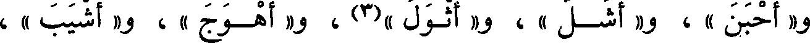
و« أحبن »، و« أشل » ، و« أثول »(3) ، و« أهوج » ، و« أشيب » ،
File: 000227.gt.txt (if the image is defective, simply delete all Arabic text and the line will be excluded)
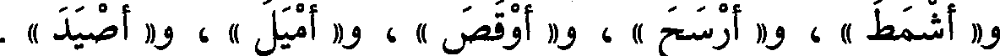
و« أشمط » ، و« أرسح » ، و« أوقص » ، و« أميل » ، و« أصيد » .
File: 000228.gt.txt (if the image is defective, simply delete all Arabic text and the line will be excluded)

وقد يبنون ضد الاسم من هذه الأسماء على بنيته فيقولون « أسته » كما
File: 000229.gt.txt (if the image is defective, simply delete all Arabic text and the line will be excluded)

يقولون « أرسح » ، ويقولون : « أفرع » للوافر الشعر كما يقولون « أصلع »
File: 000230.gt.txt (if the image is defective, simply delete all Arabic text and the line will be excluded)

ويقولون : فرس « أحرم » كما يقولون « أهضم » ، ويقولون « آذن » كما
File: 000231.gt.txt (if the image is defective, simply delete all Arabic text and the line will be excluded)

يقولون « أسك » ، ويقولون للغليظ الرقبة : « أرقب » ، و« أغلب » كما قالوا
File: 000232.gt.txt (if the image is defective, simply delete all Arabic text and the line will be excluded)

« أوقص » ، وقالوا « أزب » ، و« أشعر » كما قالوا « أجرد » .
File: 000233.gt.txt (if the image is defective, simply delete all Arabic text and the line will be excluded)

والأفعال تأتي في هذاالباب من(4) العيوب على « فعل » ، نحو :
File: 000234.gt.txt (if the image is defective, simply delete all Arabic text and the line will be excluded)
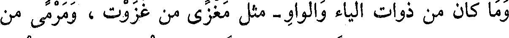
وما كان من ذوات الياء والواو- مثل مغزى من غزوت ، ومرمى من
File: 000235.gt.txt (if the image is defective, simply delete all Arabic text and the line will be excluded)

رميت - فمفعل مفتوح ، اسما كان أو مصدرا ، إلا « مأقي العين » و« مأوي
File: 000236.gt.txt (if the image is defective, simply delete all Arabic text and the line will be excluded)

الإبل » فإن العرب قد(1) تكسر هذين الحرفين ، وهما نادران .
File: 000237.gt.txt (if the image is defective, simply delete all Arabic text and the line will be excluded)

وما كان(2) فاءالفعل منه واوا-مثل وعدووردووضع-فإن مفعلا منه(3)
File: 000238.gt.txt (if the image is defective, simply delete all Arabic text and the line will be excluded)

مكسور ،اسما كان أو مصدرا ، نحو « الموعد » و «المورد »(4)
File: 000239.gt.txt (if the image is defective, simply delete all Arabic text and the line will be excluded)

و« الموضع »(5) و « الموقع » إلا أحرفا جاءت نادرة ، وقال(6) أكثرهم
File: 000240.gt.txt (if the image is defective, simply delete all Arabic text and the line will be excluded)

« موحل » ، وقال بعضهم[579] « موحل »،قال الهذلي(7) :
File: 000241.gt.txt (if the image is defective, simply delete all Arabic text and the line will be excluded)

فأصبح العين ركودا على ال أوشاز(8) أن يرسخن في الموحل(9)
File: 000242.gt.txt (if the image is defective, simply delete all Arabic text and the line will be excluded)

ويروى الموحل والموحل(10) جميعا .
File: 000243.gt.txt (if the image is defective, simply delete all Arabic text and the line will be excluded)

قال : و« مورق »(11) و« موهب » و« موكل » اسم رجل أو مكان ،
File: 000244.gt.txt (if the image is defective, simply delete all Arabic text and the line will be excluded)

و«موحد» معدول عن واحد ، يقال : « دخل القوم موحد موحد » كما يقال
File: 000245.gt.txt (if the image is defective, simply delete all Arabic text and the line will be excluded)

« أحاد أحاد » .
File: 000246.gt.txt (if the image is defective, simply delete all Arabic text and the line will be excluded)

باب فعال وفعول
File: 000247.gt.txt (if the image is defective, simply delete all Arabic text and the line will be excluded)

« الثبات والثبوت » ، و« الذهاب والذهوب » ، و« الفساد والفسود» ،
File: 000248.gt.txt (if the image is defective, simply delete all Arabic text and the line will be excluded)
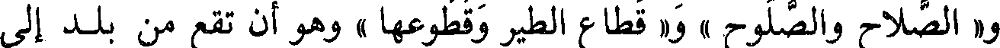
و« الصلاح والصلوح » و« قطاع الطير وقطوعها » وهو أن تقطع من بلد إلى
File: 000249.gt.txt (if the image is defective, simply delete all Arabic text and the line will be excluded)

بلد، فأما « قطاع الماء » يعني انقطاعه فمفتوح ، و « القتام والقتوم » ،
File: 000250.gt.txt (if the image is defective, simply delete all Arabic text and the line will be excluded)

و « فرغت من(1) الأمر فراغا وفروغا» [574] .
File: 000251.gt.txt (if the image is defective, simply delete all Arabic text and the line will be excluded)

باب فعال وفعول
File: 000252.gt.txt (if the image is defective, simply delete all Arabic text and the line will be excluded)

هو «الكلاح والكلوح » و« السكات والسكوت » و« الصمات
File: 000253.gt.txt (if the image is defective, simply delete all Arabic text and the line will be excluded)

والصموت » و«رزحت الناقة رزاحا ورزوحا» إذا سقطت من الهزال
File: 000254.gt.txt (if the image is defective, simply delete all Arabic text and the line will be excluded)

باب فعال وفعول
File: 000255.gt.txt (if the image is defective, simply delete all Arabic text and the line will be excluded)

والتعب .
File: 000256.gt.txt (if the image is defective, simply delete all Arabic text and the line will be excluded)

هو« النفار والنفور » ، و« الشراد والشرود » و« الشباب » من شب
File: 000257.gt.txt (if the image is defective, simply delete all Arabic text and the line will be excluded)

الفرس و« الشبوب » ، و« الشماس » من شمس و « الشموس » ،
File: 000258.gt.txt (if the image is defective, simply delete all Arabic text and the line will be excluded)
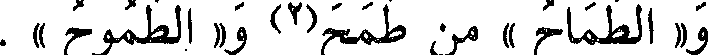
و« الطماح » من طمح(2) و«الطموح » .
File: 000259.gt.txt (if the image is defective, simply delete all Arabic text and the line will be excluded)

مفعل ومفعل
File: 000260.gt.txt (if the image is defective, simply delete all Arabic text and the line will be excluded)

قالوا: « منتن » و« منتن » بكسر الميم ؛ لا يعرف{1O غيره فمن(2)
File: 000261.gt.txt (if the image is defective, simply delete all Arabic text and the line will be excluded)

أخذه من أنتن قال(3) : منتن ، ومن أخذه من نتن قال(3) منتن .
File: 000262.gt.txt (if the image is defective, simply delete all Arabic text and the line will be excluded)
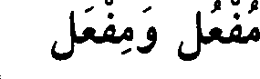
مفعل ومفعل
File: 000263.gt.txt (if the image is defective, simply delete all Arabic text and the line will be excluded)

قالوا : « مدق » و« مدق » لا يعرف غيره ، فمن قال مدق جعله مثل
File: 000264.gt.txt (if the image is defective, simply delete all Arabic text and the line will be excluded)

مسعط ومدهن ، ومن قال مدق جعله مثل محلب .
File: 000265.gt.txt (if the image is defective, simply delete all Arabic text and the line will be excluded)

مفعل ومفعل
File: 000266.gt.txt (if the image is defective, simply delete all Arabic text and the line will be excluded)

ما جاوز بنات الثلاثة فلك(4) فيه وجهان ؛ تقول « مخرج صدق »
File: 000267.gt.txt (if the image is defective, simply delete all Arabic text and the line will be excluded)

و«مدخل صدق»(5)، إن جعلته من أخرج يخرج(6) [581] وأدخل
File: 000268.gt.txt (if the image is defective, simply delete all Arabic text and the line will be excluded)

يدخل(6) ، وإن جعلته من خرج ودخل قلت « مدخل » و« مخرج » ،
File: 000269.gt.txt (if the image is defective, simply delete all Arabic text and the line will be excluded)

وكذلك « ممسى ومصبح » و« ممسى ومصبح » و( باسم الله مجراها
File: 000270.gt.txt (if the image is defective, simply delete all Arabic text and the line will be excluded)

ومرساها)(7)و « ومجراها ومرساها » وقد قرئ بهما جميعا(8) .
File: 000271.gt.txt (if the image is defective, simply delete all Arabic text and the line will be excluded)

باب فعال وفعيل
File: 000272.gt.txt (if the image is defective, simply delete all Arabic text and the line will be excluded)

« رجل شحاح وشحيح » ، و« عقام وعقيم » ، و« صحاح الأديم
File: 000273.gt.txt (if the image is defective, simply delete all Arabic text and the line will be excluded)
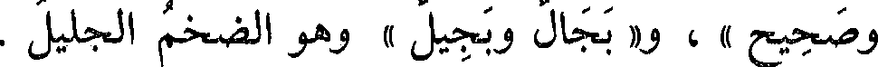
وصحيح » ، و« بجال وبجيل » وهو الضخم الجليل .
File: 000274.gt.txt (if the image is defective, simply delete all Arabic text and the line will be excluded)

و« رجل كهام وكهيم » للذي لا نفع عنده ، و« الجرام والجريم »
File: 000275.gt.txt (if the image is defective, simply delete all Arabic text and the line will be excluded)

النوى ، وهو أيضا التمر اليابس ، و« ثقال وثقيل » .
File: 000276.gt.txt (if the image is defective, simply delete all Arabic text and the line will be excluded)

باب فعال وفعيل
File: 000277.gt.txt (if the image is defective, simply delete all Arabic text and the line will be excluded)

« طويل وطوال » ، و« عريض وعراض » ، و« كبير وكبار » ، و« خفيف
File: 000278.gt.txt (if the image is defective, simply delete all Arabic text and the line will be excluded)

وخفاف » ، و« عجيب وعجاب » ، و« جليل وجلال » ، و« دقيق ودقاق » ،
File: 000279.gt.txt (if the image is defective, simply delete all Arabic text and the line will be excluded)

و« رقيق ورقاق » ، و« كريم وكرام » ، و« مليح وملاح » و« جميل وجمال » ،
File: 000281.gt.txt (if the image is defective, simply delete all Arabic text and the line will be excluded)

وأنان » و« نسيل ونسال » ماسقط من الشعر والوبر والريش، و «» شحيج البغل
File: 000283.gt.txt (if the image is defective, simply delete all Arabic text and the line will be excluded)
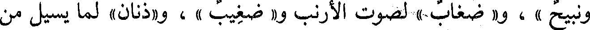
ونبيح » ، و« وضغاب » لصوت الأرنب و« ضغيب » ، و«ذنان» لما يسيل من
File: 000286.gt.txt (if the image is defective, simply delete all Arabic text and the line will be excluded)
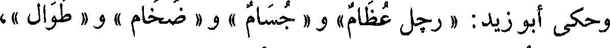
وحكى أبو زيد: « رجل عظام » و« جسام » و« ضخام» و« طوال »،
File: 000287.gt.txt (if the image is defective, simply delete all Arabic text and the line will be excluded)

ولم يقل في « ضخام » ضخيم ، إنما هو ضخم ، ولكن الأصل فيه ضخيم
File: 000288.gt.txt (if the image is defective, simply delete all Arabic text and the line will be excluded)

وجل : (إلى الله مرجعكم)(1) أي : رجوعكم، وقال تعالى :
File: 000289.gt.txt (if the image is defective, simply delete all Arabic text and the line will be excluded)
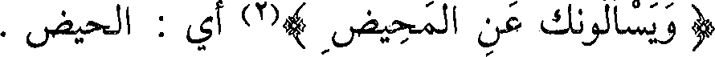
(ويسألونك عن المحيض )(2) أي : الحيض .
File: 000290.gt.txt (if the image is defective, simply delete all Arabic text and the line will be excluded)

فإذا كان يفعل منه مفتوح العين فالموضع والمصدر مفتوحان ، نحو :
File: 000291.gt.txt (if the image is defective, simply delete all Arabic text and the line will be excluded)
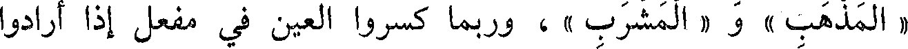
« المذهب » و « المشرب » ، وربما كسروا العين في مفعل إذا أرادوا
File: 000292.gt.txt (if the image is defective, simply delete all Arabic text and the line will be excluded)
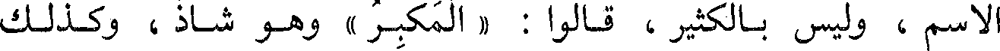
الاسم ، وليس بالكثير ، قالوا: « المكبر » وهو شاذ ، وكذلك
File: 000293.gt.txt (if the image is defective, simply delete all Arabic text and the line will be excluded)

« المحمدة » .
File: 000294.gt.txt (if the image is defective, simply delete all Arabic text and the line will be excluded)

فإذا كان يفعل مضموم العين فالاسم والمصدر مفتوحان ، مثل
File: 000295.gt.txt (if the image is defective, simply delete all Arabic text and the line will be excluded)
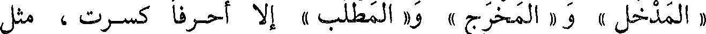
« المدخل » و« المخرج » و« المطلب » إلا أحرفا كسرت ، مثل
File: 000296.gt.txt (if the image is defective, simply delete all Arabic text and the line will be excluded)

« المسجد » [578] و« المطلع » و« المغرب » و« المشرق »
File: 000297.gt.txt (if the image is defective, simply delete all Arabic text and the line will be excluded)

و « المسقط » و « المفرق » و « المجزر » و « المنسك » من نسك ينسك ،
File: 000298.gt.txt (if the image is defective, simply delete all Arabic text and the line will be excluded)

جعلوا الكسر علامة للاسم ، وربما فتحه بعض العرب في الاسم ولزموا(3)
File: 000299.gt.txt (if the image is defective, simply delete all Arabic text and the line will be excluded)
القياس .
File: 000300.gt.txt (if the image is defective, simply delete all Arabic text and the line will be excluded)
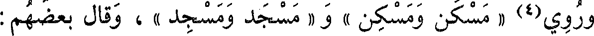
وروي(4) « مسكن ومسكن » و « مسجد ومسجد » ، وقال بعضهم :
File: 000301.gt.txt (if the image is defective, simply delete all Arabic text and the line will be excluded)

« المسجد : موضع السجود ، والمسجد : اسم البيت » .
File: 000302.gt.txt (if the image is defective, simply delete all Arabic text and the line will be excluded)

وقالوا : « مطلع ومطلع » .
File: 000303.gt.txt (if the image is defective, simply delete all Arabic text and the line will be excluded)

قال(5) : والفتح في هذه الأحرف التي كسرت جائز ، وإن لم يسمع في
File: 000304.gt.txt (if the image is defective, simply delete all Arabic text and the line will be excluded)

بعضهما .
File: 000305.gt.txt (if the image is defective, simply delete all Arabic text and the line will be excluded)

يقول : قد جاء على « فعل » حرف واحد ، وهو « الدئل » وهي(1) دويبة
File: 000306.gt.txt (if the image is defective, simply delete all Arabic text and the line will be excluded)
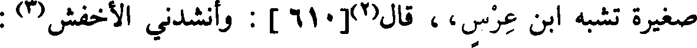
صغيرة تشبه ابن عرس،، قال(2)[610] : وأنشدني الأخفش(3) :
File: 000307.gt.txt (if the image is defective, simply delete all Arabic text and the line will be excluded)

جاؤا بجمع (4) لو قيس معرسه ما كان إلا كمعرس الدئل
File: 000308.gt.txt (if the image is defective, simply delete all Arabic text and the line will be excluded)

قال(5) : وبها سميت قبيلة أبي الأسود الدؤلي ، وهي من كنانة ، إلا
File: 000309.gt.txt (if the image is defective, simply delete all Arabic text and the line will be excluded)

أنك إذا نسبت إلى الدئل قلت : « الدؤلي » ففتحت ؛ استثقالا لكسرتين
File: 000310.gt.txt (if the image is defective, simply delete all Arabic text and the line will be excluded)

بعد ضمة ويائي النسب ، قال : ولذلك تنسب إلى إبل فتقول : « إبلي » ،
File: 000311.gt.txt (if the image is defective, simply delete all Arabic text and the line will be excluded)

ويستثقلون تتابع الكسرات ويائي (7) النسب .
File: 000312.gt.txt (if the image is defective, simply delete all Arabic text and the line will be excluded)

وقال سيبويه(8) : ليس في الكلام « فعل » إلا حرفان في الأسماء
File: 000313.gt.txt (if the image is defective, simply delete all Arabic text and the line will be excluded)

« إبل » و « حبر » وهو القلح في الأسنان ؛ قال أبو محمد : وقد جاء
File: 000314.gt.txt (if the image is defective, simply delete all Arabic text and the line will be excluded)

« إطل «» ،وهو الخاصرة ، وحرف في الصفة ، قالوا : امرأة « بلز »، وهي
File: 000315.gt.txt (if the image is defective, simply delete all Arabic text and the line will be excluded)

الضخمة(9) . [611] .
File: 000316.gt.txt (if the image is defective, simply delete all Arabic text and the line will be excluded)

وقال سيبويه(10): ليس في الكلام « فعل » وصف ، إلا حرف من
File: 000317.gt.txt (if the image is defective, simply delete all Arabic text and the line will be excluded)

ومما جاء الاسم منه على « فاعل » و « مفعل » : « أمحل البلد فهو
File: 000318.gt.txt (if the image is defective, simply delete all Arabic text and the line will be excluded)

ماحل وممحل » ، و« أعشب البلد فهو عاشب ومعشب » .
File: 000319.gt.txt (if the image is defective, simply delete all Arabic text and the line will be excluded)

و « أغضى الليل فهو غاض ومغض » ، قال رؤبة(1) :
File: 000320.gt.txt (if the image is defective, simply delete all Arabic text and the line will be excluded)

يخرجن من أجواز ليل غاض
File: 000321.gt.txt (if the image is defective, simply delete all Arabic text and the line will be excluded)

أي : مغض .
File: 000322.gt.txt (if the image is defective, simply delete all Arabic text and the line will be excluded)

وأما قول العجاج(2) :
File: 000323.gt.txt (if the image is defective, simply delete all Arabic text and the line will be excluded)

يكشف عن جماته دلو الدال [635]
File: 000324.gt.txt (if the image is defective, simply delete all Arabic text and the line will be excluded)

فإن «الدالي » هو الجاذب للدلو ليخرجها ، يقال منه « دلا يدلو » ،
File: 000325.gt.txt (if the image is defective, simply delete all Arabic text and the line will be excluded)

و« المدلي »(3) هو المستقي ، يقال « أدلى دلوه » إذا ألقاها(4) في الماء
File: 000326.gt.txt (if the image is defective, simply delete all Arabic text and the line will be excluded)

قال : فأراد : يكشف عن الماء دلو المستقي .
File: 000327.gt.txt (if the image is defective, simply delete all Arabic text and the line will be excluded)

ويقال : « اعقت الفرس » فهي « عقوق » ولا يقال(7 « معق »
File: 000328.gt.txt (if the image is defective, simply delete all Arabic text and the line will be excluded)

و« أنتجت » فهي « نتوج » ولا يقال7) « منتج » .
File: 000329.gt.txt (if the image is defective, simply delete all Arabic text and the line will be excluded)

في كل عام أضحاة وعتيرة »(1) . وفلان « نجيء العين » على فعيل ،
File: 000330.gt.txt (if the image is defective, simply delete all Arabic text and the line will be excluded)

و« نجوء العين » على فعول ، و« نجيء العين » على فعل ، و« نجؤ العين »
File: 000331.gt.txt (if the image is defective, simply delete all Arabic text and the line will be excluded)

على فعل ، إذا كان شديد العين ، يقال : قد نجأته(2) بعيني ، و« ردوا نجأة
File: 000332.gt.txt (if the image is defective, simply delete all Arabic text and the line will be excluded)

السائل بشيء(3) » ، وأسمحت(4) « قرونه ، وقرينه ، وقرونته ، وقرينته »
File: 000333.gt.txt (if the image is defective, simply delete all Arabic text and the line will be excluded)

باب ما جاء فيه خمس لغات
File: 000334.gt.txt (if the image is defective, simply delete all Arabic text and the line will be excluded)

من حروف مختلفة الأبنية
File: 000335.gt.txt (if the image is defective, simply delete all Arabic text and the line will be excluded)

أي : تبعته نفسه .
File: 000336.gt.txt (if the image is defective, simply delete all Arabic text and the line will be excluded)

« الشمال والشمال والشامل والشمل والشمل » ، و« أفرة الحر وافرة
File: 000337.gt.txt (if the image is defective, simply delete all Arabic text and the line will be excluded)

[599] وفرة وعفرة وعفرة» وهي شدة الحر ، ويقال : أوله ، وطال « طولك
File: 000338.gt.txt (if the image is defective, simply delete all Arabic text and the line will be excluded)

وطيلك وطولك وطيلك وطولك » .
File: 000339.gt.txt (if the image is defective, simply delete all Arabic text and the line will be excluded)

باب ما جاء فيه ست لغات
File: 000340.gt.txt (if the image is defective, simply delete all Arabic text and the line will be excluded)

« فسطاط وفسطاط وفستاط وفستاط(5) وفساط وفساط » ؛ و« رغوة
File: 000341.gt.txt (if the image is defective, simply delete all Arabic text and the line will be excluded)

اللبن ورغوة ورغاوة ورغاوة ورغاية » ، ويقال : « أرز » و « أرز »
File: 000342.gt.txt (if the image is defective, simply delete all Arabic text and the line will be excluded)

و« أرز » مثل كتب ، و« أرز » مثل كتب ، و« رز » و« رنز » ، وهو العبد « زنمة
File: 000343.gt.txt (if the image is defective, simply delete all Arabic text and the line will be excluded)

وزنمة وزنمة ، وزلمة وزلمة وزلمة » .
File: 000344.gt.txt (if the image is defective, simply delete all Arabic text and the line will be excluded)

مفعل ومفعل
File: 000345.gt.txt (if the image is defective, simply delete all Arabic text and the line will be excluded)

قال الكسائي : يقال « المشعر الحرام » و « المشعر الحرام(1)»، وأكثر
File: 000346.gt.txt (if the image is defective, simply delete all Arabic text and the line will be excluded)

العرب على كسرها ، ولا يقرأ بذلك(2) ، ولا يعرف(3) غير هذا الحرف .
File: 000347.gt.txt (if the image is defective, simply delete all Arabic text and the line will be excluded)

وأكثر ما جاء - مما يستعمل مكسور الميم - نحو « مقطع »
File: 000348.gt.txt (if the image is defective, simply delete all Arabic text and the line will be excluded)

و«مبضع »(4) و « مخرز » و « محلب » للقدح الذي يحلب فيه ؛ فإن جعلت
File: 000349.gt.txt (if the image is defective, simply delete all Arabic text and the line will be excluded)

شيئا من هذا مكانا فتحت الميم ؛ فالمقطع : الموضع الذي يقطع فيه ،
File: 000350.gt.txt (if the image is defective, simply delete all Arabic text and the line will be excluded)

والمقطع : الشيء الذي يقطع به ، و « المقص » : الموضع الذي يقص
File: 000351.gt.txt (if the image is defective, simply delete all Arabic text and the line will be excluded)

فيه ، والمقص : المقراض ، و « المفتح » : الموضع الذي يفتح فيه ،
File: 000352.gt.txt (if the image is defective, simply delete all Arabic text and the line will be excluded)

والمفتح : المفتاح ، وكذلك إن جعلت شيئا من هذا مصدرا فهو مفتوح .
File: 000353.gt.txt (if the image is defective, simply delete all Arabic text and the line will be excluded)

مفعل ومفعل
File: 000354.gt.txt (if the image is defective, simply delete all Arabic text and the line will be excluded)

قالوا : « منخل ومنخل » و « منصل ومنصل » للسيف ، وهذا مما
File: 000355.gt.txt (if the image is defective, simply delete all Arabic text and the line will be excluded)

يستعمل وأوله مضموم ، ومما ضم من هذا الفن أوله « مسعط » و« مدهن »
File: 000356.gt.txt (if the image is defective, simply delete all Arabic text and the line will be excluded)

و«مكحلة » ولا يقال فيه غير ذلك .
File: 000357.gt.txt (if the image is defective, simply delete all Arabic text and the line will be excluded)

مفعل وفعال
File: 000358.gt.txt (if the image is defective, simply delete all Arabic text and the line will be excluded)
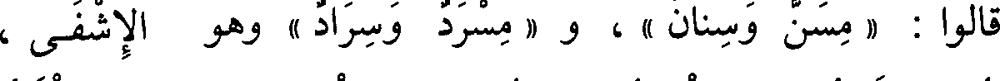
قالوا : « مسن وسنان » ، و « مسرد وسراد » وهو الإشفى ،
File: 000359.gt.txt (if the image is defective, simply delete all Arabic text and the line will be excluded)

و«معطف وعطاف»، و « ملحف ولحاف » ، و « مقرم وقرام » ، و « منطق
File: 000360.gt.txt (if the image is defective, simply delete all Arabic text and the line will be excluded)

ونطاق » .
File: 000361.gt.txt (if the image is defective, simply delete all Arabic text and the line will be excluded)

« سقيم » و« مريض » و« حزين » .
File: 000362.gt.txt (if the image is defective, simply delete all Arabic text and the line will be excluded)

ويدخل « أفعل » عليه ، قالوا : « شعث » و« أشعث » ، و« جرب » ،
File: 000363.gt.txt (if the image is defective, simply delete all Arabic text and the line will be excluded)

و« أجرب » و« حمق » و« أحمق » و« قعس » و« أقعس » .
File: 000364.gt.txt (if the image is defective, simply delete all Arabic text and the line will be excluded)
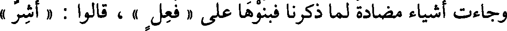
وجاءت أشياء مضادة لما ذكرنا فبنوها على « فعل » ، قالوا : « أشر »
File: 000365.gt.txt (if the image is defective, simply delete all Arabic text and the line will be excluded)

و« بطر » و« فرح » و« بهج » و« جذل » و« سكر » .
File: 000366.gt.txt (if the image is defective, simply delete all Arabic text and the line will be excluded)
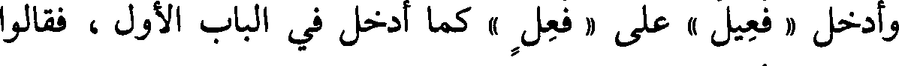
وأدخل « فعيل » على « فعل » كما أدخل في الباب الأول ، فقالوا
File: 000367.gt.txt (if the image is defective, simply delete all Arabic text and the line will be excluded)

[602] : « نشيط » .
File: 000368.gt.txt (if the image is defective, simply delete all Arabic text and the line will be excluded)

وقد يأتي « فعل » أيضا فيما كان معناه الهيج ، قالوا : « أرج » يريدون
File: 000369.gt.txt (if the image is defective, simply delete all Arabic text and the line will be excluded)
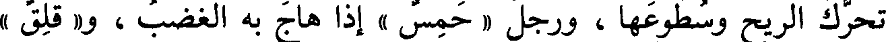
تحرك الريح وسطوعها ، ورجل « حمس » إذا هاج به الغضب ، و « قلق »
File: 000370.gt.txt (if the image is defective, simply delete all Arabic text and the line will be excluded)

و« نزق » لأنه خفة وتحرك ، و« غلق » لأنه طيش وخفة ، و« سلس » لأنه ضد
File: 000371.gt.txt (if the image is defective, simply delete all Arabic text and the line will be excluded)

لعسر ولحج ، فبنى(1) بناءه .
File: 000372.gt.txt (if the image is defective, simply delete all Arabic text and the line will be excluded)
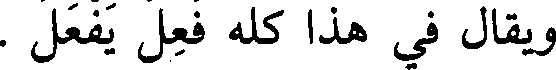
ويقال في هذا كله فعل يفعل .
File: 000373.gt.txt (if the image is defective, simply delete all Arabic text and the line will be excluded)

باب(2) الصفات بالألوان
File: 000374.gt.txt (if the image is defective, simply delete all Arabic text and the line will be excluded)

تأتي على أفعل ، نحو : « آدم » و« أعيس » و« أصهب » و« أكهب »
File: 000375.gt.txt (if the image is defective, simply delete all Arabic text and the line will be excluded)
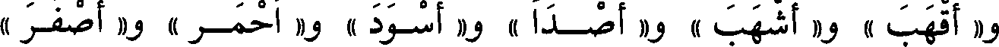
و« أقهب » و« أشهب » و« أصدأ » و« أسود » و« أحمر » و« أصفر »
File: 000376.gt.txt (if the image is defective, simply delete all Arabic text and the line will be excluded)
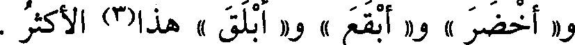
و« أخضر » و« أبقع » و« أبلق » هذا(3) الأكثر .
File: 000377.gt.txt (if the image is defective, simply delete all Arabic text and the line will be excluded)

باب ما جاء على فعلة فيه لغتان
File: 000378.gt.txt (if the image is defective, simply delete all Arabic text and the line will be excluded)

فعلة وفعلة(1)
File: 000379.gt.txt (if the image is defective, simply delete all Arabic text and the line will be excluded)
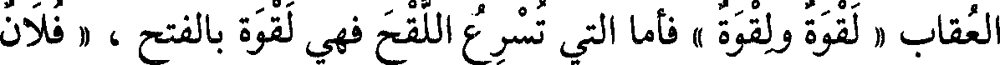
العقاب « لقوة ولقوة » فأما التي تسرع اللقح فهي لقوة بالفتح ، « فلان
File: 000380.gt.txt (if the image is defective, simply delete all Arabic text and the line will be excluded)

بعيد الهمة والهمة » و« هذه أمة حسنة المهنة والمهنة » أي : الخدمة ، و« قوم
File: 000381.gt.txt (if the image is defective, simply delete all Arabic text and the line will be excluded)
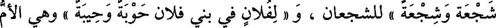
شجعة وشجعة » للشجعان ، و « لفلان في بني فلان حوبة وحيبة » وهي الأم
File: 000382.gt.txt (if the image is defective, simply delete all Arabic text and the line will be excluded)
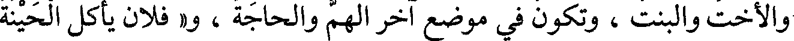
والأخت والبنت، وتكون في موضع آخر الهم والحاجة ، و« فلان يأكل الحينة
File: 000383.gt.txt (if the image is defective, simply delete all Arabic text and the line will be excluded)

والحينة » أي : مرة في اليوم ، وهي « الطسة والطسة » للطست .
File: 000384.gt.txt (if the image is defective, simply delete all Arabic text and the line will be excluded)
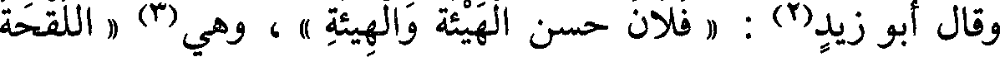
وقال أبو زيد(2) : « فلان حسن الهيئة والهيئة » ، وهي(3) « اللقحة
File: 000385.gt.txt (if the image is defective, simply delete all Arabic text and the line will be excluded)

واللقحة » .
File: 000386.gt.txt (if the image is defective, simply delete all Arabic text and the line will be excluded)
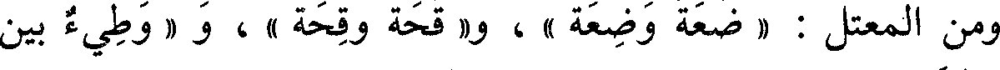
ومن المعتل : « ضعة وضعة » ، و« قحة وقحة » ، و « وطيء بين
File: 000387.gt.txt (if the image is defective, simply delete all Arabic text and the line will be excluded)

الطئة والطأة » ويقال الوطاءة .
File: 000388.gt.txt (if the image is defective, simply delete all Arabic text and the line will be excluded)

وإن(4) أردت في فعلة المرة الواحدة فهي بالفتح ؛ تقول : « قعد
File: 000389.gt.txt (if the image is defective, simply delete all Arabic text and the line will be excluded)

قعدة »(5) ، و « جلس جلسة » و« لقيته لقية »(6) .
File: 000390.gt.txt (if the image is defective, simply delete all Arabic text and the line will be excluded)

وإن(7) أردت الضرب من الفعل كسرت ؛ تقول : « هو حسن
File: 000391.gt.txt (if the image is defective, simply delete all Arabic text and the line will be excluded)

القعدة » ، و « الجلسة » و« الركبة » و« قتله شر قتلة » [564] ومات «ميتة
File: 000392.gt.txt (if the image is defective, simply delete all Arabic text and the line will be excluded)
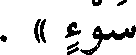
سوء » .
File: 000393.gt.txt (if the image is defective, simply delete all Arabic text and the line will be excluded)

وكشحته « كشحا » .
File: 000394.gt.txt (if the image is defective, simply delete all Arabic text and the line will be excluded)

قال : وقد يأتي « فعال » في الهياج ، نحو : « النزاع » لأنه يهيج
File: 000395.gt.txt (if the image is defective, simply delete all Arabic text and the line will be excluded)
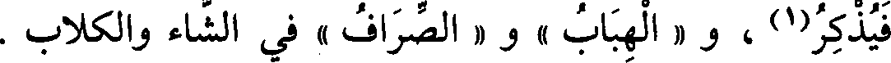
فيذكر(1) ، و « الهباب » و « الصراف » في الشاء والكلاب .
File: 000396.gt.txt (if the image is defective, simply delete all Arabic text and the line will be excluded)

قال : وقد تأتي « فعال »في أشياء بلغت الغاية ، نحو « الصرام »
File: 000397.gt.txt (if the image is defective, simply delete all Arabic text and the line will be excluded)

[608] و « الجزاز » و « الجداد » و « الحصاد » و « القطاع » و « القطاف »
File: 000398.gt.txt (if the image is defective, simply delete all Arabic text and the line will be excluded)
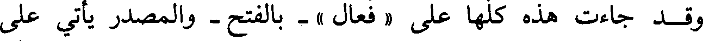
وقد جاءت هذه كلها على « فعال » - بالفتح - والمصدر يأتي على
File: 000399.gt.txt (if the image is defective, simply delete all Arabic text and the line will be excluded)

« فعل » .
File: 000400.gt.txt (if the image is defective, simply delete all Arabic text and the line will be excluded)

قال : والأسماء التي بنيت على « فعيل » تجيء وأضدادها على بناء
File: 000401.gt.txt (if the image is defective, simply delete all Arabic text and the line will be excluded)

واحد، وما أقل ما تختلف(2) ، قالوا : كثير وقليل ، وكبير وصغير ، وثقيل
File: 000402.gt.txt (if the image is defective, simply delete all Arabic text and the line will be excluded)
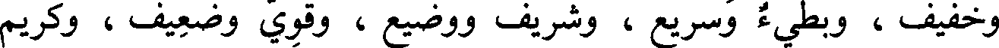
وخفيف ، وبطيء وسريع ، وشريف ووضيع ، وقوي وضعيف ، وكريم
File: 000403.gt.txt (if the image is defective, simply delete all Arabic text and the line will be excluded)

ولئيم ، وعزيز وذليل ، وغني وفقير ، وسعيد وشقي ، وقبيح ومليح ، ووسيم
File: 000404.gt.txt (if the image is defective, simply delete all Arabic text and the line will be excluded)

ودميم ، وغوي ورشيد ، وقديم وحديث ، وطويل وقصير ، وسخي
File: 000405.gt.txt (if the image is defective, simply delete all Arabic text and the line will be excluded)
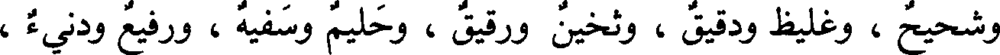
وشحيح ، وغليظ ودقيق ، وثخين ورقيق ، وحليم وسفيه ، ورفيع ودنيء ،
File: 000406.gt.txt (if the image is defective, simply delete all Arabic text and the line will be excluded)

وبطين وخميص .
File: 000407.gt.txt (if the image is defective, simply delete all Arabic text and the line will be excluded)

وقالوا : جميل وسمج وسميج .
File: 000408.gt.txt (if the image is defective, simply delete all Arabic text and the line will be excluded)

وقالوا : عظيم ، ولم يأت له ضد ؛ استغنوا(3) بضد مثله عن ضده ،
File: 000409.gt.txt (if the image is defective, simply delete all Arabic text and the line will be excluded)

وهو كبير وضده صغير .
File: 000410.gt.txt (if the image is defective, simply delete all Arabic text and the line will be excluded)

وقالوا : سمين ، ولم يأت له ضد على بنائه ، فأما قولهم « هزيل »
File: 000411.gt.txt (if the image is defective, simply delete all Arabic text and the line will be excluded)

فعلة وفعلة(1)
File: 000412.gt.txt (if the image is defective, simply delete all Arabic text and the line will be excluded)

« كسوة وكسوة » و « رشوة ورشوة » و « قدوة وقدوة » ، و « إسوة
File: 000413.gt.txt (if the image is defective, simply delete all Arabic text and the line will be excluded)

واسوة » ، و « الرحم شجنة من الله وشجنة » ، و « نسوة ونسوة » و« حبوة
File: 000414.gt.txt (if the image is defective, simply delete all Arabic text and the line will be excluded)

وحبوة » ، و «حظي فلان حظوة وحظوة » ، و « خصية وخصية » و « خفية
File: 000415.gt.txt (if the image is defective, simply delete all Arabic text and the line will be excluded)

وخفية » ، و « نسبة ونسبة » و « مرية ومرية » من الشك ، و « حاف بين
File: 000416.gt.txt (if the image is defective, simply delete all Arabic text and the line will be excluded)

الحفوة والحفوة » و « الشقة والشقة » للسفر البعيد(2) ، و « العدوة والعدوة »
File: 000417.gt.txt (if the image is defective, simply delete all Arabic text and the line will be excluded)

للمكان(3) المرتفع ، و « عدوة الوادي وعدوته » ، وفيه(4) « غلظة وغلظة »
File: 000418.gt.txt (if the image is defective, simply delete all Arabic text and the line will be excluded)

و« رفقة ورفقة » ، و « كنية وكنية » و « امرأة ذات كدنة وكدنة » إذا كانت ذات
File: 000419.gt.txt (if the image is defective, simply delete all Arabic text and the line will be excluded)

لحم ، و«مدية ومدية» السكين(5)، والغيبة(6) «الإكلة والأكلة» و «حشوة
File: 000420.gt.txt (if the image is defective, simply delete all Arabic text and the line will be excluded)

البطن وحشوة»(7) و«منية الناقة ومنيتها » وهي الأيام التي يتعرف فيها ألاقح
File: 000421.gt.txt (if the image is defective, simply delete all Arabic text and the line will be excluded)

هي أم حائل، و«ذروة الشيء وذروته » أعلاه، و«إخوة وأخوة »، و(وجدنا
File: 000422.gt.txt (if the image is defective, simply delete all Arabic text and the line will be excluded)

آباءنا على إمة)(8) و«أمة» أي : دين، «الجثوة [565] والجثوة » الحجارة
File: 000423.gt.txt (if the image is defective, simply delete all Arabic text and the line will be excluded)

المجتمعة، و«جذوة من النار وجذوة »، و«قنوة المال وقنوة»، و «قنية وقنية»
File: 000424.gt.txt (if the image is defective, simply delete all Arabic text and the line will be excluded)

ويقال : «سروة وسروة» للنصال القصار .
File: 000425.gt.txt (if the image is defective, simply delete all Arabic text and the line will be excluded)

قال الفراء : وقولهم « العصي » و « الحقي » بالياء(1) ؛ لأنهم
File: 000426.gt.txt (if the image is defective, simply delete all Arabic text and the line will be excluded)

يجتمعون ما بين الثلاثة منه إلى العشرة بالياء ، فيقال « ثلاث أدل » و « عشرة
File: 000427.gt.txt (if the image is defective, simply delete all Arabic text and the line will be excluded)

أحق » و « عشر(2) أعص » فبنوا الكثيرة(3) على هذا (4) .
File: 000428.gt.txt (if the image is defective, simply delete all Arabic text and the line will be excluded)

قال (5) : وقولهم « الفتوة » بالواو وأصلها الياء ، وهي مصدر من
File: 000429.gt.txt (if the image is defective, simply delete all Arabic text and the line will be excluded)

مصادر الياء شاذ حمل على مصادر الواو ، وهو (6) قولك « أب بين الأبوة »
File: 000430.gt.txt (if the image is defective, simply delete all Arabic text and the line will be excluded)

و « أخ بين الأخوة » و « ابن بين البن،ة » (7) ، فلما حملت افتوة على مصادر
File: 000431.gt.txt (if the image is defective, simply delete all Arabic text and the line will be excluded)

الواو ؛ جعلت (8) بالواو ، كما حملت « الشروى » - وهو(9) [ 629 ]
File: 000432.gt.txt (if the image is defective, simply delete all Arabic text and the line will be excluded)

المثل - على الواو ؛إذ أشبهت(10) مصادر الواو مثل دعوى ونجوى ، قال :
File: 000433.gt.txt (if the image is defective, simply delete all Arabic text and the line will be excluded)

ثم جمعوا الفتى « فتوا » على ذلك(11) ، وكان(12) القياس « فتى ».
File: 000434.gt.txt (if the image is defective, simply delete all Arabic text and the line will be excluded)

قال(13) : ولم نجد ياء بعدها واو غير مهموزة في الأسماء إلا في
File: 000435.gt.txt (if the image is defective, simply delete all Arabic text and the line will be excluded)

« يوم » ، قال(14) : ولا يقال من يوم فعلت ولا يفعل .
File: 000436.gt.txt (if the image is defective, simply delete all Arabic text and the line will be excluded)

باب ما جاء على فعلل وفيه لغتان
File: 000437.gt.txt (if the image is defective, simply delete all Arabic text and the line will be excluded)

فعلل وفعلل
File: 000438.gt.txt (if the image is defective, simply delete all Arabic text and the line will be excluded)

« دخلل فلان ودخلله » أي : خاصته ، و « رجل قعدد وقعدد(1)» إذا كان قريب
File: 000439.gt.txt (if the image is defective, simply delete all Arabic text and the line will be excluded)

الآباء إلى الجد الأكبر ، و « جؤذر وجؤذر » ، و « قنفذ وقنفذ » و « عنصل
File: 000440.gt.txt (if the image is defective, simply delete all Arabic text and the line will be excluded)

وعنصل » للبصل البري ، و « العنصر والعنصر » الأصل(2) ، و « البرقع
File: 000441.gt.txt (if the image is defective, simply delete all Arabic text and the line will be excluded)

والبرقع » ، و«طحلب وطحلب » .
File: 000442.gt.txt (if the image is defective, simply delete all Arabic text and the line will be excluded)

فعلل وفعلل
File: 000443.gt.txt (if the image is defective, simply delete all Arabic text and the line will be excluded)

« جنجن وجنجن » لواحد الجناجن ،وهي عظام الصدر ، و«بفيه الإثلب
File: 000444.gt.txt (if the image is defective, simply delete all Arabic text and the line will be excluded)

والأثلب » و « الكثكث والكثكث » أي : التراب .
File: 000445.gt.txt (if the image is defective, simply delete all Arabic text and the line will be excluded)

ومما جاء بالهاء « ناقة عجلزة وعجلزة » ، و « المال بيننا شق الإبلمة
File: 000446.gt.txt (if the image is defective, simply delete all Arabic text and the line will be excluded)

والأبلمة » وقد روي الأبلمة أيضا ، بمعنى واحد ، وهي الخوصة(3) .
File: 000447.gt.txt (if the image is defective, simply delete all Arabic text and the line will be excluded)

باب فعلال وفعلول
File: 000448.gt.txt (if the image is defective, simply delete all Arabic text and the line will be excluded)

« شمراخ وشمروخ » ، و « عثكال وعثكول » ، و « إثكال
File: 000449.gt.txt (if the image is defective, simply delete all Arabic text and the line will be excluded)

وأثكول » ، و « عنقاد وعنقود » ، و « جذمار وجذمور » ، وهي قطعة
File: 000451.gt.txt (if the image is defective, simply delete all Arabic text and the line will be excluded)

باب أفعل وفعل
File: 000452.gt.txt (if the image is defective, simply delete all Arabic text and the line will be excluded)

ومعلوق »(5) . [ 585 ]
File: 000453.gt.txt (if the image is defective, simply delete all Arabic text and the line will be excluded)

« أشعث وشعث » ، و « أجرب وجرب » ، و « أخشن وخشن » ،
File: 000454.gt.txt (if the image is defective, simply delete all Arabic text and the line will be excluded)

باب معاني أبنية الأسماء
File: 000455.gt.txt (if the image is defective, simply delete all Arabic text and the line will be excluded)

كل اسم على فعلان فمعناه الحركة والاضطراب ، نحو « ضربان » ،
File: 000456.gt.txt (if the image is defective, simply delete all Arabic text and the line will be excluded)

و« نزوان » و« غليان » و« جولان » و« طيران » و« لهبان (1 النار» ،
File: 000457.gt.txt (if the image is defective, simply delete all Arabic text and the line will be excluded)

و« قفزان » و« نقزان » و« نفزان » و« خطران » و« لمعان » ، و« وهجان1)
File: 000458.gt.txt (if the image is defective, simply delete all Arabic text and the line will be excluded)

النار » و« دوران » و« طوفان » ، وأشباه(2) ذلك كثير(3) .
File: 000459.gt.txt (if the image is defective, simply delete all Arabic text and the line will be excluded)

وقد شذ منه شيء ؛ فقالوا « الميلان » و« موتان الأرض » [600]وليس
File: 000460.gt.txt (if the image is defective, simply delete all Arabic text and the line will be excluded)

هما من الحركة في شيء .
File: 000461.gt.txt (if the image is defective, simply delete all Arabic text and the line will be excluded)

قال : وهذا البناء لا يجيء فعله يتعدى الفاعل ، إلا أن يشذ شيء ،
File: 000462.gt.txt (if the image is defective, simply delete all Arabic text and the line will be excluded)

قالوا : شنئته شنآنا .
File: 000463.gt.txt (if the image is defective, simply delete all Arabic text and the line will be excluded)

قال : و« فعلان » كثيرا ما يأتي(4) في الجوع والعطش ، وما قاربهما ،
File: 000464.gt.txt (if the image is defective, simply delete all Arabic text and the line will be excluded)

قالوا : « ظمآن » ، و« عطشان » ، و« صديان » ، و« هيمان « بمعنى
File: 000465.gt.txt (if the image is defective, simply delete all Arabic text and the line will be excluded)

عطشان .
File: 000466.gt.txt (if the image is defective, simply delete all Arabic text and the line will be excluded)

وقالوا : « جوعان » و« غرثان » ، و« علهان » وهو الشديد الغرث
File: 000467.gt.txt (if the image is defective, simply delete all Arabic text and the line will be excluded)

والحرص على الطعام ، ورجل « شهوان للطعام » و« عيمان إلى اللبن » .
File: 000468.gt.txt (if the image is defective, simply delete all Arabic text and the line will be excluded)

وقالوا : « قرم إلى اللحم » فأخرجوه من هذه البنية وجعلوه بمنزلة
File: 000469.gt.txt (if the image is defective, simply delete all Arabic text and the line will be excluded)

الداء ، كما قالوا : دو ، ووجع .
File: 000470.gt.txt (if the image is defective, simply delete all Arabic text and the line will be excluded)

قال : ومما قارب هذا المعنى فبنوه بناءه « لهفان » و« حران »
File: 000471.gt.txt (if the image is defective, simply delete all Arabic text and the line will be excluded)

« منسج الثوب » حيث ينسج و« منسج » ، « مغسل الموتى » حيث
File: 000472.gt.txt (if the image is defective, simply delete all Arabic text and the line will be excluded)

يغسلون و« مغسل »، و« مقبض السيف ومقبضه » و« مضربه ومضربه » ،
File: 000473.gt.txt (if the image is defective, simply delete all Arabic text and the line will be excluded)

و« المنسك والمنسك » ، و« المسكن والمسكن » ، و« مفرق الطريق
File: 000474.gt.txt (if the image is defective, simply delete all Arabic text and the line will be excluded)

ومفرقه » . وكذلك « مفرق الرأس »(2) ، و« مطلع ومطلع » ، و« محشر
File: 000475.gt.txt (if the image is defective, simply delete all Arabic text and the line will be excluded)

ومحشر » و« منبت ومنبت » « ومدب السيل (3) ومدب » ، وهو « محل أجر
File: 000476.gt.txt (if the image is defective, simply delete all Arabic text and the line will be excluded)

ومحل أجر » .
File: 000477.gt.txt (if the image is defective, simply delete all Arabic text and the line will be excluded)

كل ما كان على فعل يفعل فالاسم منه مكسور، والمصدر مفتوح
File: 000478.gt.txt (if the image is defective, simply delete all Arabic text and the line will be excluded)

[577] قال الله عز وجل : ( أين المفر )(4)، فمن قرأه بالفتح أراد أين
File: 000479.gt.txt (if the image is defective, simply delete all Arabic text and the line will be excluded)

الفرار ، وإن(5) أراد المكان الذي يفر إليه قال «المفر »(6) بالكسر،
File: 000480.gt.txt (if the image is defective, simply delete all Arabic text and the line will be excluded)

وتقول(7) : « هذا مضرب فلان » تريد الموضع الذي ضرب إليه وبلغه ،فإن
File: 000481.gt.txt (if the image is defective, simply delete all Arabic text and the line will be excluded)

أردت المصدر قلت : «إن في ألف درهم لمضربا» أي : ضربا، قال الله
File: 000482.gt.txt (if the image is defective, simply delete all Arabic text and the line will be excluded)

تعالى : ( وجعلنا النهار معاشا )(8) يريد عيشا، وهو مصدر .
File: 000483.gt.txt (if the image is defective, simply delete all Arabic text and the line will be excluded)

وقد جاء بعض المصادر على « مفعل » والأول أكثر وأقيس ، قال عز
File: 000484.gt.txt (if the image is defective, simply delete all Arabic text and the line will be excluded)

« يخرج » لقالوا(1) « يؤخرج » .
File: 000485.gt.txt (if the image is defective, simply delete all Arabic text and the line will be excluded)

قال الفراء : الميم تزاد في أول الحرف وآخره ، ولا تزاد في وسطه ؛
File: 000486.gt.txt (if the image is defective, simply delete all Arabic text and the line will be excluded)

فأما ما زيدت فيه أولا ف «مفعل » ونحوه ، وأما ما زيدت فيه آخرا ف « فم »
File: 000487.gt.txt (if the image is defective, simply delete all Arabic text and the line will be excluded)

و « اللهم » و« زرقم » و« ستهم » و « ابنم » .
File: 000488.gt.txt (if the image is defective, simply delete all Arabic text and the line will be excluded)

قال سيبويه(2) : وكل ميم كانت في أول حرف فهي مزيدة ، إلا ميم
File: 000489.gt.txt (if the image is defective, simply delete all Arabic text and the line will be excluded)

« معزى » فإنها من نفس الحرف ؛ لأنك تقول معز ، ولو كان زائدة لقلت
File: 000490.gt.txt (if the image is defective, simply delete all Arabic text and the line will be excluded)

عزى(3) ، وميم « معد » لأنك تقول تمعدد ، و « تمفعل » قليل ، قالوا من
File: 000491.gt.txt (if the image is defective, simply delete all Arabic text and the line will be excluded)

مسكين « تمسكن » وهو من التمسكن(4) ، و « تمدرع » في(5) المدرعة .
File: 000492.gt.txt (if the image is defective, simply delete all Arabic text and the line will be excluded)

وقال(6) : والميم في « المنجنيق (7) » من نفس الحرف ، وهو بمنزلة
File: 000493.gt.txt (if the image is defective, simply delete all Arabic text and the line will be excluded)

عنتريس ، و« منجنون » كذلك بمنزلة عرطليل [632] وميم « مأجج »
File: 000494.gt.txt (if the image is defective, simply delete all Arabic text and the line will be excluded)

و« مهدد »(8) من الحرف ؛ لأنهما لو كانتا(9) زائدتين لأدغمت(10)كمرد
File: 000495.gt.txt (if the image is defective, simply delete all Arabic text and the line will be excluded)

ومفر ، فإنما(11)بمنزلة الدالين في قردد .
File: 000497.gt.txt (if the image is defective, simply delete all Arabic text and the line will be excluded)

فعالة بثلاث لغات
File: 000498.gt.txt (if the image is defective, simply delete all Arabic text and the line will be excluded)

أتيته « ملاوة من الدهر وملاوة وملاوة » ، وهي « رغاوة اللبن ورغاية
File: 000499.gt.txt (if the image is defective, simply delete all Arabic text and the line will be excluded)

ورغاوة » ، و« الخلالة والخلالة والخلالة » مصدر خاللته ، سقط على(1)
File: 000500.gt.txt (if the image is defective, simply delete all Arabic text and the line will be excluded)

« حلاوة القفا ، وحلاوة القفا ، وحلاوى(2) القفا » .
File: 000501.gt.txt (if the image is defective, simply delete all Arabic text and the line will be excluded)

باب ما جاء فيه ثلاث لغات
File: 000502.gt.txt (if the image is defective, simply delete all Arabic text and the line will be excluded)

من حروف مختلفة الأبنية(3)
File: 000503.gt.txt (if the image is defective, simply delete all Arabic text and the line will be excluded)

هو « برقع وبرقع وبرقوع » ، والخوصة « الأبلمة والإبلمة والأبلمة » ،
File: 000504.gt.txt (if the image is defective, simply delete all Arabic text and the line will be excluded)

و« خاتم وخيتام وخاتام » ، و« سيما » مقصور و« سيماء » ممدود(4)
File: 000505.gt.txt (if the image is defective, simply delete all Arabic text and the line will be excluded)

و« سمياء » ، بزيادة الياء ، وهي لغة لثقيف بالمد(5) ، قال أبو زيد : « عناق
File: 000506.gt.txt (if the image is defective, simply delete all Arabic text and the line will be excluded)

تحلبة وتحلبة وتحلبة » للتي تحلب قبل أن تحمل . [597]
File: 000507.gt.txt (if the image is defective, simply delete all Arabic text and the line will be excluded)

باب ما جاء فيه أربع لغات
File: 000508.gt.txt (if the image is defective, simply delete all Arabic text and the line will be excluded)

من بنات الثلاثة